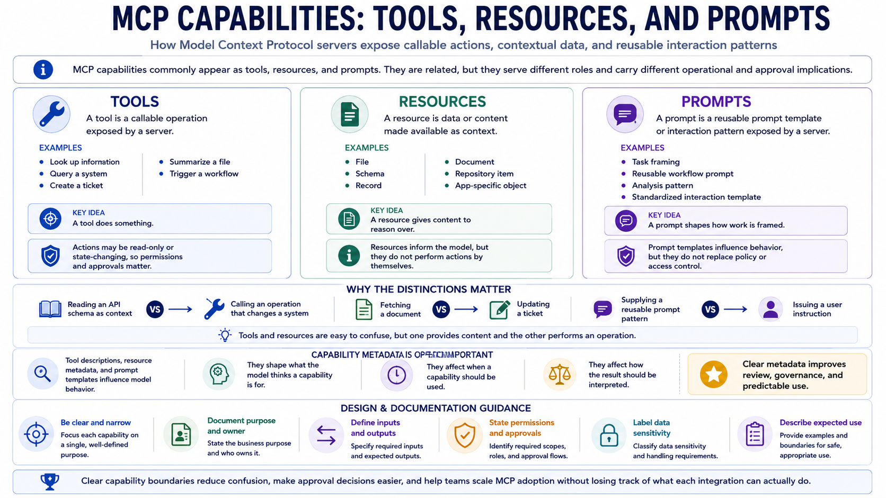

Tools, Resources, and Prompts
Connecting to LMS... Progress: in progress

Narration
MCP capabilities commonly appear as tools, resources, and prompts. A tool is a callable operation exposed by a server. It may look up information, query a system, create a ticket, summarize a file, trigger a workflow, or perform another defined action. A resource is data or content made available as context, such as a file, schema, record, document, repository item, or application-specific object. A prompt is a reusable prompt template or interaction pattern exposed by a server.
Tools and resources are easy to confuse, but they serve different roles. A resource gives the AI application content to reason over. A tool does something or requests something. Reading an API schema as context is different from calling an operation that changes a system. Fetching a document is different from updating a ticket. Good courseware, documentation, and system design should make those distinctions visible because the risks and approval needs are different.
Prompts are also distinct from user messages and system instructions. A prompt template may help standardize how a task is framed, but it should not be treated as a replacement for policy or access control. Tool descriptions, resource metadata, and prompt templates all influence model behavior. They affect what the model thinks a capability is for, when it should be used, and how the result should be interpreted. That makes capability metadata operationally important.
Capabilities should be clear, narrow, documented, and understandable. A narrowly described read-only lookup is easier to review than a broad tool that can perform many unrelated actions. Documentation should explain purpose, owner, inputs, outputs, permissions, data sensitivity, and expected use. This is not just tidiness. Clear capability boundaries reduce confusion, make approval decisions easier, and help teams scale MCP adoption without losing track of what each integration can actually do.